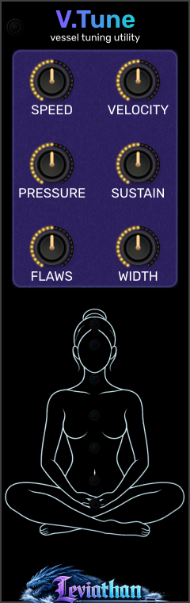

SPEED
0–2 rev/s · default 0.2
Rubbing speed around the bowl. Used with PRESSURE when RUB (G) is high, INTENSE is unpatched, and the manual RUB pad is released.
Leviathan for VCV Rack 2 · Open Source
An 8 HP companion for Vessel, bringing six performance and voicing controls to the panel alongside a pitch-driven body display.

Shape the bowl
V.Tune exposes the excitation and voicing settings held by Vessel. Use it to set the strength of triggered hits, work directly with rubbing speed and pressure, and shape decay, resonant imperfections, and stereo width.
It has no audio engine or patch jacks of its own. Vessel remains the source of sound and the home of pitch, material, mallet, ΔHz, output level, performance pads, and CV inputs.
Connect and play
Panel breakdown
Click a numbered marker for its description. Defaults below are initial Vessel values; connecting to an already configured Vessel adopts its current values.
0–2 rev/s · default 0.2
Rubbing speed around the bowl. Used with PRESSURE when RUB (G) is high, INTENSE is unpatched, and the manual RUB pad is released.
0–100% · default 50%
Strength of gate-triggered hits when VEL is unpatched. A manual HIT uses its pad position; a connected VEL replaces this setting.
0–15 N · default 2.5
Contact pressure for the separate-control rubbing path. Speed and pressure work together: changing pressure can alter the friction response as well as the level.
0.25×–4× · default 1×
Scales the bowl’s decay times. Lower values shorten ringing and higher values lengthen it. This shapes resonance decay rather than holding an envelope at a fixed level.
0–2 · default 1
Scales imperfection between paired resonant modes. Zero removes this mode-pair splitting; higher values increase it. This is a different control from Vessel’s left/right ΔHz.
0–100% · default 70%
Changes the separation of the stereo observation positions. Compare at ΔHz = 0 to isolate the spatial effect. It does not change the bowl frequency difference.
Top-left edge
Shows the adjacent Vessel connection. Place V.Tune immediately to Vessel’s right. Vessel’s matching indicator turns green when it accepts the control messages.
Lower display
Body shading follows the connected Vessel’s center pitch. The seven pitch-color lights track the bowl-color mapping independently. These are visual indicators, not controls or audio outputs.
Control priority
| V.Tune control | Active when | Override |
|---|---|---|
| VELOCITY | Vessel receives a HIT (T) edge with VEL unpatched. | VEL replaces it for triggered hits. Manual HIT uses vertical pad position. |
| SPEED + PRESSURE | RUB (G) is active, INTENSE is unpatched, and the manual RUB pad is released. | INTENSE coordinates both values; the held RUB pad takes priority over INTENSE. |
| SUSTAIN + FLAWS + WIDTH | The companion is connected and active. | These remain voicing controls during either hits or rubbing. |
| Output level | Always controlled on Vessel. | Use Vessel LEVEL; V.Tune has no output-level knob. |
For a predictable comparison, change one control at a time and repeat the same gesture. If you hold the RUB pad to audition SPEED, you are hearing the pad’s coordinated intensity gesture instead of the separate-control path.
Body map and color
The lower illustration is a pitch-driven display. Body shading reads Vessel’s center-frequency value, including pitch CV; it does not analyze the output audio or measure activity in a listener’s body. Its Sound+Body associations are a visual mapping. The pitch readout can remain meaningful while the bowl is silent.
Right-click V.Tune and open Body map. Choose Body shading on or Off, then Soft intensity, Normal intensity, or Strong intensity. The menu also reports the linked Vessel target center and the active region labels. These intensity choices affect display opacity, not sound.
| Center-frequency band | Displayed association |
|---|---|
| 20–30 Hz | Chest, abdomen, eyes / ears |
| 30–50 Hz | Spine, core, legs |
| 50–100 Hz | Larger muscle groups |
| 100–300 Hz | Throat, chest, abdomen / flanks |
| 300–600 Hz | Head and upper neck |
| 600–1000 Hz | Upper / central head |
| 1000–2000 Hz | Ears and head |
The shading blends around band boundaries. The seven chakra LEDs follow Vessel’s bowl-color mapping independently; turning body shading off does not turn off those LEDs. Disconnecting or bypassing V.Tune removes its linked-frequency display data.
Attachment and patch storage
When V.Tune first attaches to a Vessel, it copies that Vessel’s current six settings before sending control messages. Moving it to a different Vessel therefore adopts the new neighbor’s settings rather than imposing the old ones.
While connected, Vessel keeps a copy of the received values. Detaching or bypassing V.Tune leaves the latest values in Vessel. Reattach the companion to edit them again. Keep direct adjacency: a gap, another module, or placement on the left breaks the connection.
Save the Rack patch with both modules to retain the full setup. V.Tune saves its body-map mode and shading intensity along with its knob settings. Its live frequency display comes from the attached Vessel and is refreshed when the patch runs.
Patch ideas
Send a regular, sparse trigger to Vessel HIT (T), with VEL unpatched. Begin at SUSTAIN 1×, then compare shorter and longer settings using the same VELOCITY.
Longer decay lets successive strikes overlap; leave enough time to hear each tail when comparing.
Hold RUB (G) high with INTENSE unpatched. Start around SPEED 0.2 rev/s and PRESSURE 2.5 N, then vary one slowly while holding the other still.
This exposes the interaction that the coordinated intensity path normally manages for you.
With ΔHz at zero, strike a fixed pitch and compare FLAWS at zero and one. Then hold FLAWS steady and sweep WIDTH.
FLAWS changes mode-pair splitting; WIDTH changes observation separation. They shape different aspects of the sound.
Troubleshooting
Check that V.Tune is directly to Vessel’s right, touching in the same row, and is not bypassed. Check the link indicators.
Manual HIT uses vertical pad position. Test VELOCITY with HIT (T) triggers and leave VEL unpatched.
Release the RUB pad and unplug INTENSE, then keep RUB (G) high. The pad and intensity input override the separate controls.
This is the attachment behavior: V.Tune adopts the settings of the Vessel it is connected to.
Check the connection, bypass state, and Body map → Body shading on. No available linked frequency means no active body shading.
WIDTH changes observation positions. Set Vessel ΔHz to zero for equal left/right tuning.
Reference
VCV Rack 2 · 8 HP · right-side Vessel companion · six panel knobs · no inputs or outputs · body shading and independent pitch-color indicators.
Checked against the local V.Tune controls, attachment handshake, body-map implementation, Vessel control priority, and plugin manifest on October 28, 2026. Appearance and available behavior can differ between releases.